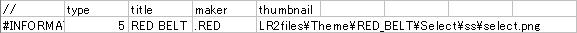
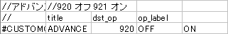
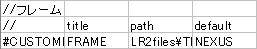
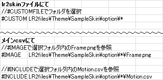
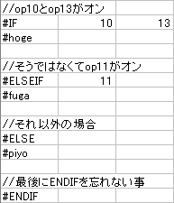
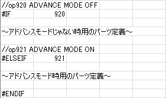
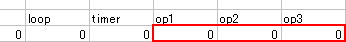
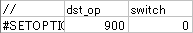
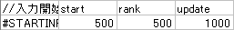
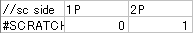

拡張定義と勝手に名付けましたが、これは画像や文字を表示する定義ではなく、スキンの動作そのものを指定する定義です。
いくつかの項目には解説用に適当な名前を付けてますが、特にこれといった呼び名はありません。
定義によっては使用できるスキン種別が決まっています。#IMAGEも厳密にはこれに分類されそうです。
- #INFORMATION
- #CUSTOMOPTION
- #CUSTOMFILE
- #ENDOFHEADER
- #IF
- #INCLUDE
- #SETOPTION
- #STARTINPUT
- #SKIP
- #LOADSTART
- #LOADEND
- #PLAYSTART
- #CLOSE
- #FADEOUT
- #RELOADBANNER
- #TRANSCOLOR
- #FLIPSIDE
- #FLIPRESULT
- #DISABLEFLIP
- #SCRATCH
#INFORMATION
スキン種別やスキンタイトルなどを指定します。lr2skinファイル内で宣言する必要があります。
※#IFや#INCLUDEでの分岐内で宣言しても認識されません。

| type |
スキンタイプ番号を指定します。 0：7KEYS
ここから未対応 ※システムログでは何故か14と15が入れ替わりますが、作る時はこの値で合ってます。 |
|
| title |
スキンタイトルを指定します。 |
|
| maker |
スキン製作者名を指定します。 |
|
| thumbnail |
スキンセレクト時、プレビューがオフの場合に表示されるスキンサムネイルを指定します。 ※省略可能。 |
|
スキンカスタマイズ関連
いわゆるスキンオプション用の定義です。lr2skinファイル内で宣言する必要があります。
1つのスキンで#CUSTOMOPTIONと#CUSTOMFILE合わせて40個まで利用可能です。
ただし、本体側の仕様により#CUSTOMOPTION定義は21個目以降に定義しても正常に動作しないため、
合計数が21個を超える場合は#CUSTOMOPTIONを先に記述しておく必要があります。
また、合計数が21個を超えるとDX+同様、カスタマイズ関連のバグが発生します。
※#IFや#INCLUDEでの分岐内で宣言しても認識されません。
#CUSTOMOPTION

title オプション名を指定します。スキンセレクト画面で表示される項目なのでなるべく分かりやすく簡潔に。
dst_op このスキンオプションに割り当てるDSTオプション値を指定します。
※CUSTOMOPTIONで利用可能なop値は900番台のみです。実質99個しか使えないので機能追加は慎重に。
op_label オプションの項目名を指定します。
ここで定義した項目数分だけ、dst_opで指定した値から順に連番でop値が割り当てられます。この例の場合ではop920 ADVANCE MODE OFF op921 ADVANCE MODE ON になりますが、
dst_op値に960を指定するとそれぞれop960とop961になります。LR2上でスキンカスタマイズ画面からオプション項目を選択すると、割り当てたdst_op値がONになります。
あとは後述する#IF定義と各op値を用いて項目名通りの動作になるようにスキン側で分岐を作ります。#CUSTOMFILE

title オプション名を指定します。スキンセレクト画面で表示される項目なのでなるべく分かりやすく簡潔に。
path このオプションで切り替えるファイル/フォルダを指定します。
パスやファイル名にワイルドカード「*」を使用することで、本体側が条件に合致するファイルやフォルダを列挙します。
また、CUSTOMFILE定義の場合には用意したファイルやフォルダのほかに「RANDOM」という選択肢が追加されます。#IMAGEや#INCLUDEのpathに同じものを指定することで、パス内の『*』がスキンオプションで指定した項目に置換されます。
例
ファイル指定の場合
LR2files\Theme\OA_DX+\parts_AC\frame_AC\*.pngフォルダ指定の場合
LR2files\Bgm\*ファイル指定時は拡張子でフィルタリングすることが出来ますが、
フォルダ指定時はフォルダ以外のデータも参照されてしまうので使用するフォルダ以外は配置しないように気を付けましょう。※.\LR2files\…とLR2files\…のようにどちらも同じようなファイルの指定であっても、
#CUSTOMFILEと#IMAGE（#INCLUDE）でパス表記を完全に一致させなければパーツの切り替えは行えません。※機械的に項目名が代入されるので、仕様上『*』を2つ以上使っての複合分岐は出来ません。
（かなり複雑な実装が必要です。詳しくはLP EXや関連リンク参照。）default 初期選択ファイルを指定します。
通常、項目を切り替える際はパス順で切り替わりますが、
defaultで指定したファイル/フォルダが存在する場合はスキン導入後の初回起動時にそのファイル/フォルダが選択状態になります。※省略可能。
スキンカスタマイズ画面で選択したファイル/フォルダのパスが、スキン内で同じパス表記にした#IMAGE定義や#INCLUDE定義に代入されます。
一般的には画像を切り替える用途で使われるため、画像の規格（各パーツサイズやファイル形式）を統一する必要がありますが、
#INCLUDE定義で参照フォルダごと切り替える場合には画像と子csvを同時に切り替えることが出来るため、異なるフォーマットやモーションを使うことが可能です。
#ENDOFHEADER
#INFORMATIONと#CUSTOMIZEの終了時に入れてください。
必須ではありませんが、起動が少しばかり高速になります。
条件分岐関連
実際に条件分岐するのは#IF〜#ENDIFまでですが、セットで使う機会が多いのでまとめました。
なお、かなり特殊な例なので先に書いておきますがサウンドセットで使用する音声ファイル定義はいずれもIF定義で条件分岐させることは出来ません。
#IF・#ELSEIF・#ELSE・#ENDIF
DST定義のop1〜3と違い、スキンのロード時に一度だけ分岐が行われます。
このためスキン動作中に切り替わるオプションに対しては効果がありません。#IFと#ELSEIFの右に分岐条件となるdst_option値を記述します。
複数指定した場合はAND条件分岐となり、全オプションがONの場合のみ分岐します。なお、この時条件から外れた範囲は読み込み自体スキップされます。
#IMAGEなどで読み込み分岐を行うとgr値がズレる場合があるので注意しましょう。
逆にELSE等の記述ミスにより複数の分岐が同時に発生してしまい、
『本来1つしか使用できない定義』が複数読み込まれるといった不具合も充分考えられます。※オプションスロット分岐とは異なりオプション値にマイナス符号や『！』を付けても否定条件分岐にはなりません。
基本書式

#IF〜#ENDIF内が一連の分岐となり、ENDIFで分岐を終了します。※#ENDIFを忘れると結構な大惨事になるので#IFを記述したらそのまま#ENDIFもセットで作りましょう。
例では1行の定義を分岐させていますが分岐内行数に制限はありません。
また、分岐可能な定義には汎用定義だけでなく特殊定義や拡張定義も含まれます。
#IMAGEで読み込み画像を切り替えたり、時間制御関連定義を分岐させてスキン動作そのものを切り替えることが出来ます。
※#INFORMATION・#CUSTOMOPTION・#CUSTOMFILE・音声ファイル定義全般は分岐させることが出来ません。#ELSEは1つの分岐内で1回しか使えませんが#ELSEIFには個数制限がありません。
スキンによっては30通りの並列分岐なども珍しくありません。※#ELSEIFと#ELSEは省略可能。
※オプション値によってはスキンセレクト専用に#ELSEを入れないとスキンセレクト時のみバグる場合があります。関連リンク：IF命令とSETOPTION命令を使ったOR分岐とNOT分岐
先の基本書式の様に通常は本体側のdst_option値を用いて条件分岐を作りますが、
スキンオプションで定義した900番台のオプション値では前述の#CUSTOMOPTIONの場合を例にすると#CUSTOMOPTION定義
に対して#IF定義の分岐は
#IF定義
このようになります。
※ON/OFFの分岐なので#ELSE定義は省略。補足：オプションスロット分岐
#IF定義と同じくその時のオプション値による条件分岐としてDST定義内のオプション指定があります。
全DST定義共通でDST定義1行目の右端の3列で動作条件となるオプション値を指定します。
#IF定義と同じ点
- 本体側のdst_option値及びスキン側のカスタムオプション値が使用可能
- 複数オプションを指定した場合はAND条件として扱われる（ただしオプションスロットは最大3個まで）
#IF定義と異なる点
- 単体で否定条件（NOT）が使用可能（例：op50の反対 = -50 or !50）
※Excelの場合だと計算し始める恐れがあるのでなるべく「！」推奨- 定義単位での読み込みは事前に行われ、オプション値に合致した時に表示される
（#IF定義はスキン読み込み時のみ分岐するので、スキン動作中のオプション値の変化には非対応）- あくまでも表示/非表示の制御のみ（読み込み自体は行われる）ため、csv内で1つしか宣言できない特殊定義系には使えません
（仕様上、最後に記述した定義のみ動作します）- DST行を持たない宣言系定義には使えません
ほとんどの場合はIF分岐・スロット分岐どちらでも問題無く動作しますが、
定義を読み込んでから分岐するスロット分岐に対して、スキン動作開始段階で分岐が確定するIF分岐は優先的に動きます。
仕様上、事前に動作定義を絞り込めるIF分岐の方がより低負荷化が見込めますが、
『スキン動作中にリアルタイムに切り替わるオプション値に応じて表示を変化させたいパーツ』定義では
スロット分岐を使わないと意味がありません。IF分岐は読み込みのON/OFF、スロット分岐は表示のON/OFFと覚えましょう。
- 関連リンク：
- LR2でのDSTオプション遷移
#INCLUDE
他のcsvファイルを参照する命令です。スキンを複数のファイルに別けて記述することができます。
#INCLUDEで自身を指定すると、無限ループが発生してwiindowsごと死亡する恐れがあるので注意して下さい。基本書式
※通常は#IFと組み合わせてDSTオプションで分岐させますが、
CUSTOMFILE定義で対象をcsvファイルにすることでスキンカスタマイズからの切り替えが可能です。関連リンク：CUSTOMFILE命令による画像と子csvの同期分岐
#SETOPTION
900番台のオプションのオンオフを制御します。
#CUSTOMOPTION定義で指定されたオプション値も
#CUSTOMOPTIONより後に#SETOPTIONを記述することで上書きできます。基本書式

dst_op 制御対象のop値を指定します。
switch オンかオフを指定します。
0：オフ
1：オン
#IF〜#ENDIFまでの間に別な#IF〜#ENDIFを入れても分岐することは出来ませんが、
#IFと#INCLUDEの条件分岐子csv読み込みならばIF内IF分岐が可能です。
時間制御関連
スキンの動作タイミングを指定します。単位はすべてms。いくつかのtimerの動作開始タイミングに影響します。
基本的には1スキンで1回ずつしか使用しませんが、#IFでオプション分岐させることが可能です。
#STARTINPUT
スキン動作開始からボタン入力受付開始までの時間を指定します。
この指定時間が過ぎないとボタンを押しても反応しません。（スキップも出来ません）通常は1つだけですがリザルトスキンとコースリザルトスキンでのみ、3つ指定します。

start スキン動作開始からボタン入力受付開始までの時間を指定します。
rank（リザルトのみ） ランクが表示されてから入力受付開始までの時間を指定します。
update（リザルトのみ） 更新画面が表示されてから入力受付開始までの時間を指定します。 timer150番台とのタイミング調整が非常に面倒です。計算し易い値にしましょう。
#SKIP
決定スキン専用。この時間が過ぎるとスキップ可能です。
※#STARTINPUTの方が優先なのでそれより大きい値を取らないと意味無いです。#LOADSTART
プレイスキン専用。スキンの動作開始から曲データのロード開始までの時間を指定します。
#LOADEND
プレイスキン専用。ロード開始からロード終了までの最短時間を指定します。
パーツの動作をロード時間に合わせたい場合にはtimer40 READY を用いてタイミングを調整します。
※あくまでも最短時間であり、実際のロード時間は曲データのサイズやフォーマットによって異なります。#PLAYSTART
プレイスキン専用。ロード終了から曲開始までの時間を指定します。
timer40からtimer41が動作するまでの時間になります。#CLOSE
プレイスキン専用。閉店時にこの時間が過ぎると次のスキンに移行します。
#FADEOUT
フェードアウト時にこの時間が過ぎると次のスキンに移行します。
※選曲→決定間ではフェードアウトしません。
その他の定義
上記以外の定義です。あまり変更されることがない気がします。基本的には使うか使わないかでしょう。
こちらも1スキンで1回ずつしか使用しませんが、#IFでオプション分岐させることが可能です
#RELOADBANNER
選曲スキンでバナーを参照する場合はこの定義を入れておかないとカーソル移動時に切り替わってくれません。
ちなみにちゃんと定義してもたまに切り替わってくれません。（仕様です）#TRANSCOLOR
画像パーツの透過色をRGB値で指定します。ただし、DST定義のblend値が0の時しか透過されません。
※省略できないらしいです。
#FLIPSIDE
プレイスキン専用。
1P用定義と2P用定義が存在する場合にこの定義を宣言すると1P用と2P用が入れ替わります。※DP FLIPはこの定義が無くても左右が入れ替わるので実質バトル専用です。
（そもそもDP FLIPには専用のop値が無いのでスキン側で分岐組めません）#FLIPRESULT
プレイスキンとリザルト・コースリザルトスキンで使用できます。
#FLIPSIDEのリザルト版ですが、プレイスキンでの宣言を引き継ぐことが出来る非常に珍しい定義です。※この定義を使用するとリザルトでop330番台の#IF分岐が正常に動作しなくなります。
#DISABLEFLIP
#FLIPRESULTを無効化します。
#FLIPRESULTがプレイスキンでの宣言を引き継いでしまうため、
他のプレイスキンからの意図しないリザルト反転を防ぐために使用される定義です。#SCRATCH
プレイスキン専用。スクラッチサイドを指定します。
通常は#DST_NOTEでノーツ落下座標が決まる為、しっかり合わせなくてもプレイは可能ですが
5鍵譜面を7鍵スキンでプレイする場合に左側の2レーンか右側の2レーン、どちらを省略するかという定義です。
0が左、1が右です。「デフォルトは0」と書いてあるので省略時は左側2レーンがカットになるんだと思います。